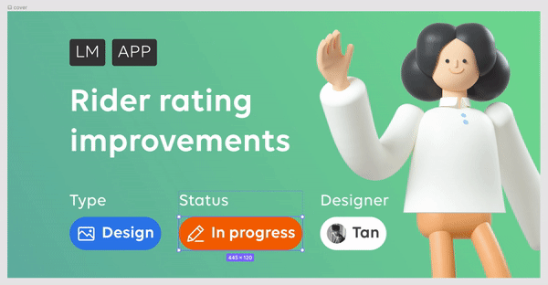
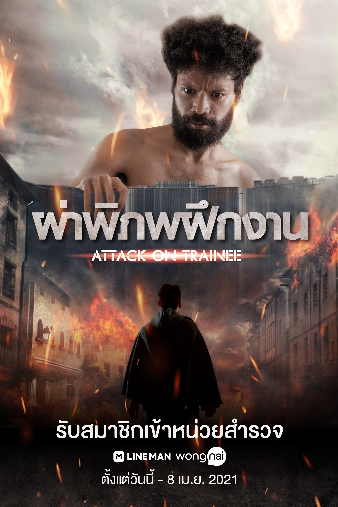
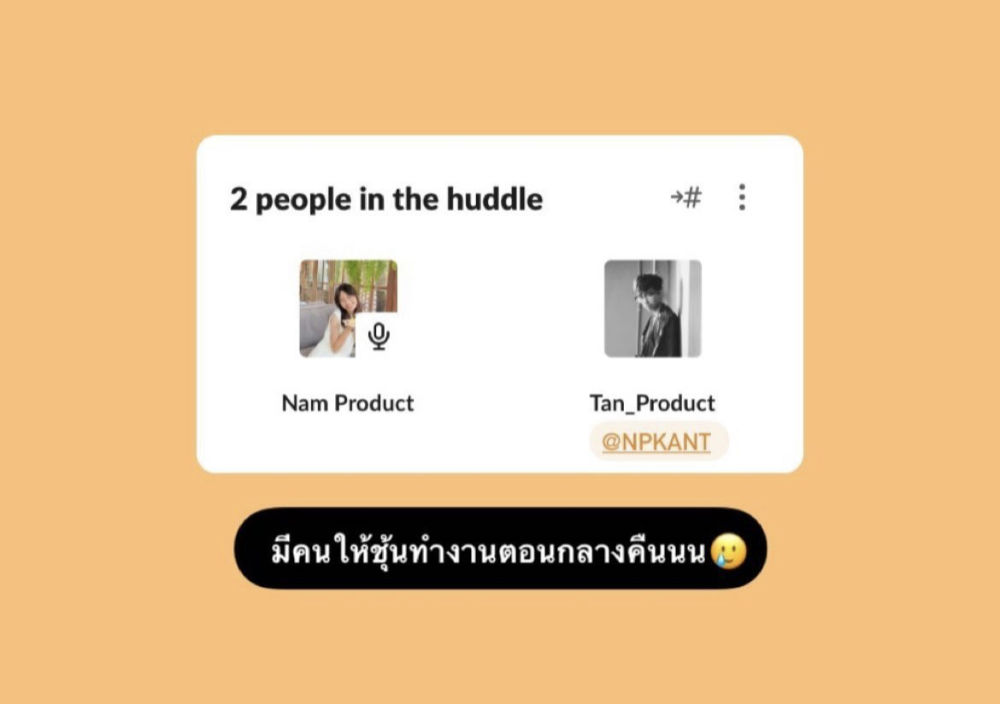
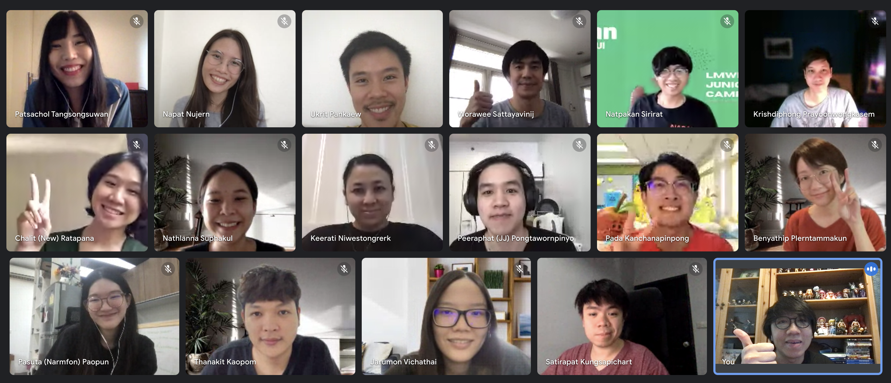

รีวิว : ชีวิตหน้าจอคอมช่วง WFH กับบทบาท Product Design ตลอด 44 วัน ที่ไลน์แมนวงใน เป็นยังไง ไปดู !

แนะนำตัวกันก่อน เราชื่อแทนนะ ได้มีโอกาสเข้าไปในตำแหน่ง Product Design (UX/UI) ฝั่งของไลน์แมนในช่วงการ WFH และวันนี้จะชวนท่านผู้อ่านทุกท่าน มาอ่านคำถามและคำตอบที่รู้ตัวอีกที ผมทำสองอย่างนี้ด้วยตัวเองไปแล้ว (หัวเราะ)
เพิ่มเติม : รูปภาพส่วนหนึ่งนำมาจาก Final Intern Presentation ที่ทำขึ้นสำหรับพรีเซ้นต์ให้พี่ ๆ ในทีมได้ฟังและให้ฟีดแบคซึ่งกันและกัน ในวันท้าย ๆ ที่ได้ทำงาน
เอ๊ะ ! สมัครเข้าไปฝึกงานได้ยังไงกันนะ ?
เป็นช่วงที่กำลังจะเรียนจบพอดี กำลังจะไปสัมภาษณ์งานอยู่แล้ว เพราะโปสเตอร์นี้เลย (ภาพด้านล่าง) เลยคิดว่าเราไปฝึกงานก่อนดีกว่า อย่างน้อย ๆ สองเดือนต่อจากนี้ก็จะได้รู้ตอบตัวเองได้ว่าเราสนุกกับการทำตรงนี้รึป่าวนะ
ตัดภาพไปตอนโมเม้นต์นั้น ระหว่างเลื่อนฟีดอยู่ ก็เจอ เพจ Facebook ที่เค้าโพสต์รับสมัครน้องฝึกงาน บวกกับเป็นแฟนคลับนายฮ้อยกับร่างทรงซะด้วย พอเจอโพสต์นี้เข้าให้ ก็ใช้เวลาไม่นานในการตัดสินใจ ขอบคุณนายฮ้อยด้วยฮะ

บรรยายกาศการสัมภาษณ์ + แบบฝึกหัด
รู้สึกว่าเค้าจะมีอีเมลแบบฝึกหัดให้เราทำแล้วจะส่งให้ส่งกลับภายใน 7 วัน (อันนี้น่าจะขึ้นอยู่กับแต่ละตำแหน่งด้วย) หลังจากนั้นก็จะมีอีเมลแจ้งว่าแบบฝึกหัดเราผ่านรึป่าว? (อันนี้รอไม่นาน) รออีกไม่นาน จะมีอีเมลอีกฉบับเพื่อนัดสัมภาษณ์ รู้สึกว่าจะมี 2 รอบ (จำไม่ค่อยได้) ส่วนตัวเรามองว่าพี่ ๆ เค้าเน้นไปที่การเล่า เคยได้ทำอะไรมาบ้าง ได้อะไรจากการทำ หนึ่ง สอง สาม สี่ เอาเป็นว่าตั้งใจทำ ทำให้เต็มที่เท่าที่เราทำได้ ส่วนเรื่องสัมภาษณ์ปล่อยธรรมชาติเลย อย่าไปพยายามสร้างมันมากไป เป็นตัวเองดีที่สุด

ชีวิตความเป็นอยู่ เป็นยังไงบ้าง ?
ส่วนตัวเราคิดว่าที่นี่เค้ามีตารางการทำงานที่ค่อยจะชัดเจน ทำให้เราค่อนข้างยืดหยุ่น จัดการเวลาส่วนตัวได้ง่ายมากขึ้น มีฝ่าย HR (ตีปาก) ที่นี่เค้าเรียก People (ปีโป้) คอยผุดกิจกรรมสันทนาการต่าง ๆ แบบไม่มีพัก ไม่ว่าจะเป็น ช่วงร้องเพลงของพี่ ๆ พนักงาน เกมทัวร์นาเมนต์ แนะนำการทำงาน แชร์ประสบการณ์ โดยจะจัดขึ้นในวันศุกร์ช่วงเย็น ๆ ผ่านทางช่องทางออนไลน์ต่าง ๆ นี่ยังไม่หมดนะ ยังมีโค้ดส่วนลดสำหรับสั่งอาหารไลน์แมนสำหรับพนักงานให้อีกด้วย เรียกว่าสวัสดิการดีมาก ๆ เลย... นี่เป็นเด็กฝึกงานนะ พนักงานน่าจะยิ่งกว่านี้ (ฮ่าฮ่า)

รีวิวงานที่งานได้ทำให้ฟังหน่อย
งานที่รับผิดชอบมีประมาณสี่อย่างครับ มีทั้งเป็น ระยะสั้น Week ต่อวีคบ้าง เช่น ทำ UX Research ของ Mart Feature, งานออกแบบ สติกเกอร์สำหรับใช้ในช่องแชทของพี่ไรเดอร์ หรือโปรเจกต์ที่ใช้เวลาประมาณ 2-3 วีค อย่าง ออกแบบ UI ของฟีเจอร์สำหรับการ Rating , การให้ทิป รวมเป็นการแจ้งเตือนสำหรับพี่ๆไรเดอร์ ยังมีโปรเจกต์ระยะยาวสองเดือน อย่างโปรเจกต์ Revamp เว็บทางการของ LINEMAN ตัวเก่า หลัก ๆ มีประมาณ 4 อัน

ชิ้นแรกเป็น ทำ UX Reseach วิเคราะห์ข้อดี ข้อเสีย ของคู่แข่งทั้งทางตรงและทางอ้อม, แนวทางการพัฒนา Feature ในระยะสั้น ระยะยาว สุดท้ายก็รวบรวมข้อมูลทำ Presentation Feedback กลับไปให้พี่ ๆ เอาข้อมูลนำไปใช้ต่อไป ซึ่งแน่นอน หลัก ๆ ที่ได้ก็คือ Reseaching Skill เยอะมาก ๆ สำหรับการหา Insignts ที่เราต้องการ ซึ่ง Process พวกนี้จำเป็นต่อการออกแบบมาก เช่นกัน

ชิ้นต่อมาเป็น Sticker ที่จะได้เห็นเวลาเราจะ Chat กับพี่ ๆ ไรเดอร์ พอเห็นพี่ไรเดอร์ใช้จริง ๆ ก็แอบดีใจที่ได้นำไปใช้จริง แต่กว่าจะมาเป็นอันนี้ก็แอบทำมาหลายเวอร์ชั่นเหมือนกัน โดยเป้าหมายโปรเจกต์นี้ก็เพื่อต้องการเพิ่มสติกเกอร์สำหรับช่องแชท ให้ไรเดอร์คุยกับลูกค้าได้สะดวกมากยิ่งขึ้น
สิ่งที่ได้เรียนรู้สำหรับงานชิ้นนี้หลัก ๆ คือการปรับ Artwork (มีอยู่แล้ว) ให้เป็นอย่างที่เราต้องการ ภายใต้ข้อกำหนดต่างๆ การอ่านกฎ ข้อบังคับต่าง ๆ ก็เป็นสิ่งที่ควรทำความเข้าใจก่อนจะนำไปใช้นำไปออกแบบ ซึ่งก็มีประโยชน์มาก ๆ

ต่อมาเป็นโปรเจตก์ที่ใช้เวลาอยู่กับมันเหมือนจะนานที่สุดเลยก็ว่าได้ จุดประสงค์ คือการปรับการให้คะแนนร้านอาหารกับไรเดอร์แยกออกจากกันให้ชัดเจนมากขึ้น ภายใต้ดีไซต์ใหม่ ในส่วนของแทนได้ดู การให้คะแนนพี่ไรเดอร์ครับ โดยการให้คะแนนก็นำไปสู่การให้ ทิปกับพี่ ๆ ไรเดอร์ ในกรณีที่พึงพอใจมาก ๆ ซึ่งในเคสนี้ได้เรียนรู้เยอะมาก ๆ ทั้งการทำ Reserch ที่ต่อยอดจากงานที่ผ่านมา เพิ่มเติมคือต้องลงไปทำความเข้าใจ รายละเอียดของ Flow รวมถึงเคสต่างๆ ที่จะเกิดขึ้นในกรณีต่าง ๆ

งานสุดท้าย เป็นปรับปรุง Website LINE MAN ให้ผู้ใช้งานมีประสบการณ์ที่ดียิ่งขึ้น รวมไปถึงการอัปเดตข้อมูลให้เป็นปัจจุบันมากขึ้น แน่นอนว่าก็ต้องสอดคล้องกับฟีเจอร์ของตัวแอปของไลน์แมนเองด้วยเช่นกัน

ชอบอะไรที่นี่บ้าง ?
บรรยากาศการทำงาน
เป็นบรรยากาศที่น่าทำงาน มี Section ที่มา Syn, Update งานกัน มี Critique งานกันจากพี่ ๆ ที่มีประสบการณ์ที่แตกต่างกัน สุดท้ายก็มุ่งเน้นให้งานมันมีมิติที่ครบมากขึ้น มี Retrospectives ที่สนุก ๆ มาก ค่อยช่วยเหลือปัญหากันและกัน

เพื่อน (พี่) ร่วมงาน
รู้สึกเป็นกันเอง คุยได้ ถามได้ และจะได้คำตอบที่พึงพอใจมาตลอด ทำให้งานที่ถืออยู่ รู้สึกดีที่มีคนค่อยให้คำแนะนำ ค่อยรับฟังความคิดของเรา คอยเพิ่ม มุมมองใหม่ ๆ ที่เราอาจไม่เคยเจอ

ไม่ชอบ (อยากพัฒนา/แก้ไข)
- สปีดการทำงาน เหมือนตัวเองยังทำงานในสปีดที่ไม่ค่อยสม่ำเสมอเท่าที่ควร คงต้องใช้เวลาในการปรับตัว สำหรับใน 2 เดือนที่ผ่านมาก็เหมือนได้เตรียมสำหรับงานจริง
- การจัดการเวลา สำหรับการทำงาน, พักผ่อน, ออกกำลังกาย ดูเหมือนยังไม่ค่อยจะลงตัว ยิ่งอยู่ที่บ้านจริง ๆ มันควรจะง่ายขึ้นแต่กลับกันมันยังทำได้ไม่ค่อยดี สองเดือนนี้ก็เหมือนเป็นการปรับจังหวะการทำงานหลังจากเรียนจบที่ดีมาก ๆ

อะไรที่รู้สึกเกินคาดไปบ้าง ?
- ทั้งสองทีมทำงานด้วยกัน : ต้องบอกว่า ด้วยการรวมกันของ 2 บริษัท ทั้งไลน์แมนและวงใน ทำให้การทำงานในพาร์ทที่เราทำ ก็ต้องพูดว่าทำงานแยกกันค่อนข้างชัดเจน มีบาง Meeting ในหนึ่งวีค ที่ทั้งสองทีมจะมาอัปเดต critique งาน ติชม ให้ฟีดแบคซึ่งกันและกัน
- การปรับตัว : รู้สึกปรับตัวได้ง่ายกว่าที่คิดมาก ไม่มีรอยต่อ เหมือนเป็นเพื่อน เหมือนเป็นพี่ที่คณะ ค่อยเสิร์ฟความเป็นกันเองอยู่เรื่อย ๆ ทำให้รู้สึกกล้าที่จะ (พิมพ์) ถาม เสียดายไม่ได้เจอหน้ากันจริง ๆ
- ได้ Explore เยอะมาก : รู้สึกว่าได้ลงมือทำอะไรจริง ๆ จัง ๆ และหลากหลายกว่าที่คิดไว้มาก มันเต็มไปด้วยเรื่องที่ไม่รู้ ความผิดพลาดมายมาก ตัวเองก็จะพยายามไม่ผิดเรื่องเดิม ๆ เพราะมีอะไรให้ทำเยอะมาก จริง ๆ
